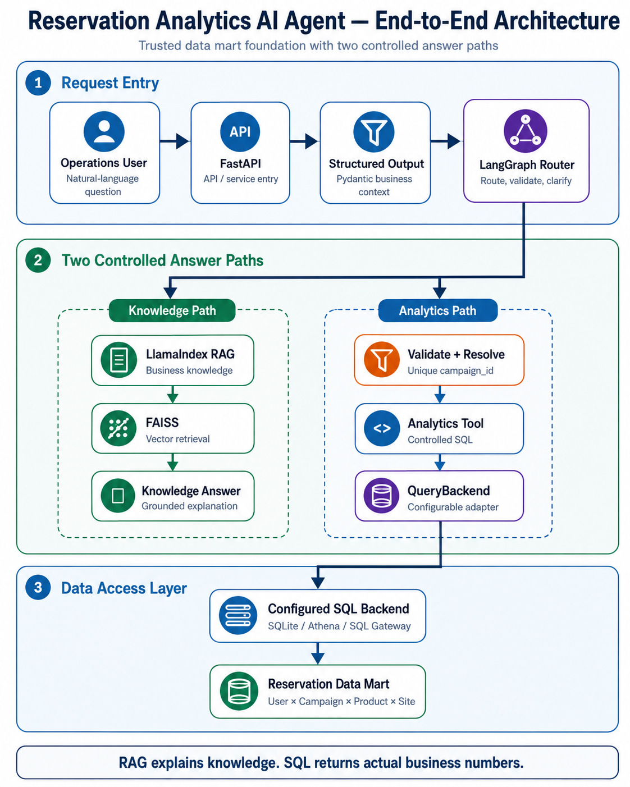
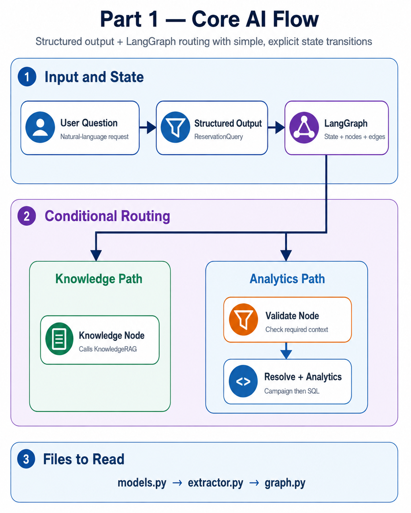
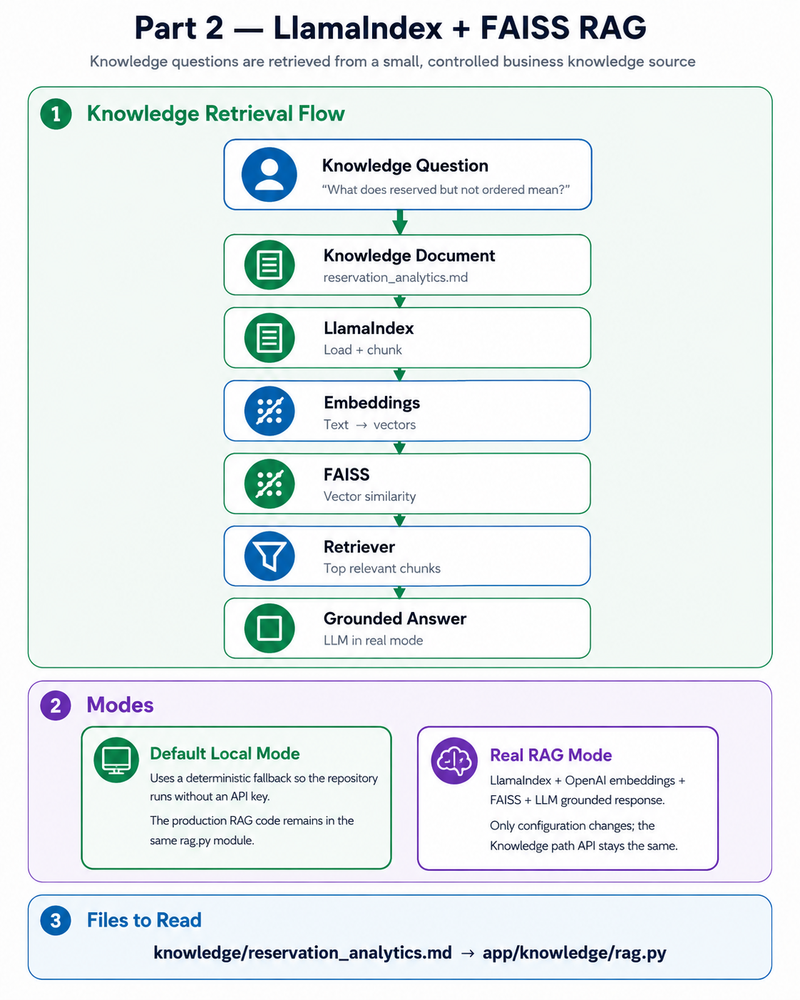
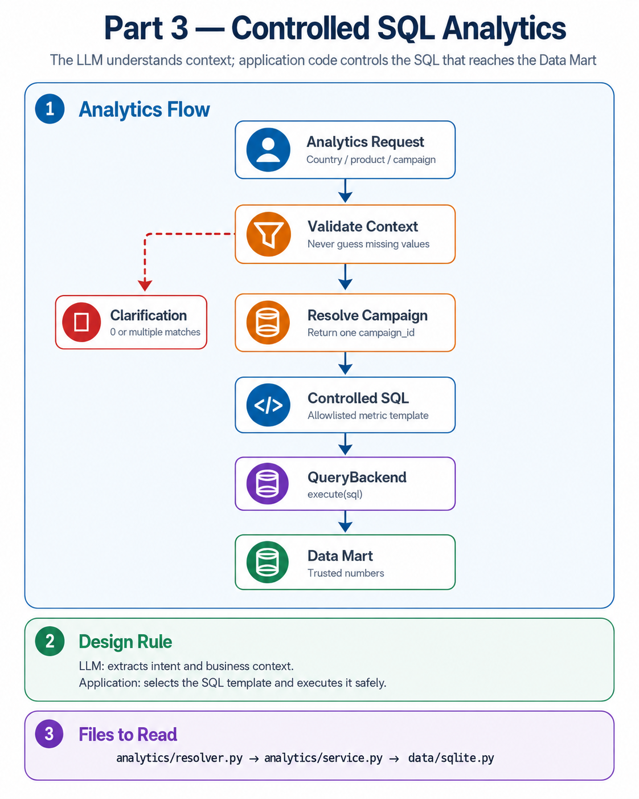
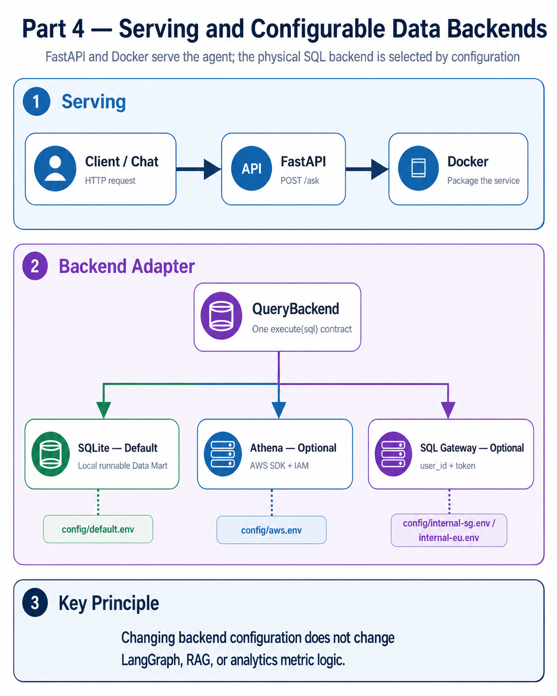

Reservation Analytics AI Agent — Learning Guide
A compact 1–2 day path from concepts → notebooks → production code.
Start Here
Learn the project in layers. Start with the local SQLite path, then add serving and remote backends only after the core flow is clear.

Day 1 — Core Flow
1
Structured Output
notebooks/01_structured_output.ipynb
2
LlamaIndex + FAISS
notebooks/02_llamaindex_faiss_rag.ipynb
3
LangGraph Routing
notebooks/03_langgraph_routing.ipynb
4
Controlled SQL
notebooks/04_controlled_sql.ipynb
Day 2 — Integration
5
End-to-End Agent
notebooks/05_end_to_end_agent.ipynb
7
Docker + Optional Backends
Dockerfile · app/data/remote.py
Key Terms
LangGraph
LlamaIndex
FAISS sounds like “face”
FastAPI
Structured Output
Embedding
Retriever
Vector Store
Controlled SQL
QueryBackend
Data Mart
Athena
Part 1 — Core AI

Part 1 converts natural language into structured business context and uses LangGraph to choose the next path.
What to Read
models.py→extractor.py→graph.py
What to Understand
State · Node · Edge · Conditional Edge · Structured Output
Small Example
class ReservationQuery(BaseModel):
country: str | None = None
product: str | None = None
campaign_id: str | None = None
The structured object is the contract between natural-language understanding and the workflow.
Part 2 — Knowledge RAG

Mental Model
Markdown→LlamaIndex→Embedding→FAISS→Retriever→Answer
LlamaIndex manages the retrieval workflow. FAISS performs vector similarity search.
Knowledge Source
knowledge/reservation_analytics.md
Production Code
app/knowledge/rag.py
Default local mode uses a deterministic fallback. Set USE_LLM=true to activate the LlamaIndex + FAISS + LLM path.
Part 3 — SQL Analytics

Core Rule
LLM: understand intent. Application: select controlled SQL. Data Mart: return trusted numbers.
Campaign Resolution
app/analytics/resolver.py0 match → not found
1 match → continue
multiple → clarify
Metric SQL
app/analytics/service.pyUses allowlisted metric templates after one campaign is resolved.
SELECT
COUNT(DISTINCT CASE WHEN reserve_flag = 1 THEN user_id END)
AS reserved_users
FROM dm_reservation_conversion
WHERE campaign_id = 'CMP001';
Part 4 — Serving & Backends

FastAPI
Exposes the agent as an HTTP service.
Docker
Packages the service and dependencies into one runnable container.
Backend Contract
Analytics→backend.execute(sql)→SQLite / Athena / SQL Gateway
| Mode | Config | Learn when |
|---|
| SQLite | config/default.env | Day 1 |
| Athena | config/aws.env | Day 2, optional |
| SQL Gateway | config/internal-sg.env / internal-eu.env | Day 2, optional |